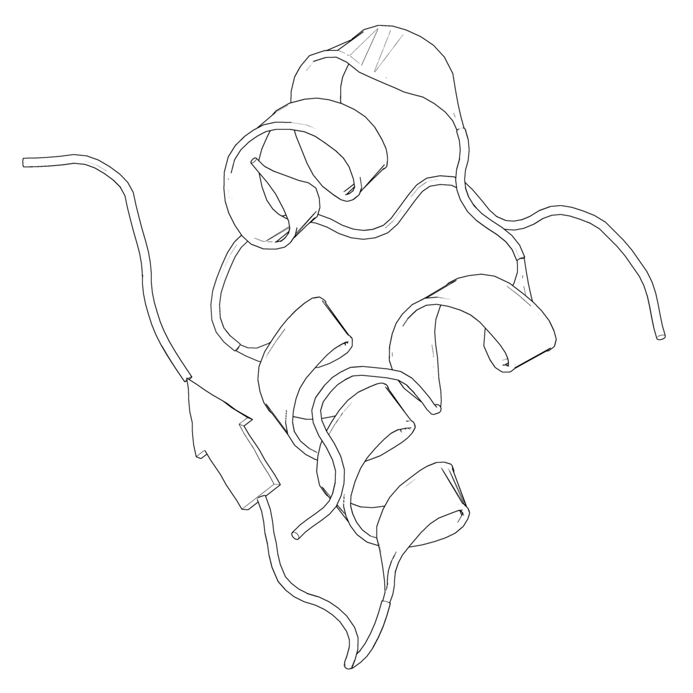

蛋白质工程的原理和应用
本期导读
第二代基因工程 · 从预期功能出发

视频原话 · 导读3 句
- 同学们好！这节课梳理人教版选择性必修三第三章第四节——蛋白质工程的原理和应用。8.8s
- 高考常考蛋白质工程的基本思路、操作对象，以及蛋白质工程和基因工程的区别。8.0s
- 我们按六个考点梳理，每个考点都讲清楚怎么考、怎么做。5.5s
蛋白质工程的概念01#
以蛋白质分子的结构规律及其与生物功能的关系为基础，通过改造或合成基因，来改造现有蛋白质，或制造一种新的蛋白质
在基因工程基础上延伸出来 → 第二代基因工程
需要它的原因：基因工程原则上只能生产自然界已存在的蛋白质，不一定符合人类需要
解题方法
抓住“改造或合成基因”：蛋白质工程的落脚点永远是基因
视频原话5 句
- 考点一，蛋白质工程的概念。它是指以蛋白质分子的结构规律及其与生物功能的关系作为基础。9.4s
- 通过改造或合成基因，来改造现有蛋白质，或制造一种新的蛋白质，以满足人类生产和生活的需求。9.5s
- 蛋白质工程是在基因工程的基础上延伸出来的，所以被称为第二代基因工程。7.0s
- 为什么需要它？因为基因工程原则上只能生产自然界已存在的蛋白质，而天然蛋白质不一定完全符合人类的需要。10.5s
- 考法：问概念中的关键词。解题方法：抓住“改造或合成基因”，蛋白质工程的落脚点永远是基因。10.0s
蛋白质工程的思路02#
易错
思路与中心法则方向相反；因为密码子的简并，推出的脱氧核苷酸序列不是唯一的
视频原话6 句
- 考点二，蛋白质工程的基本思路。第一步，从预期的蛋白质功能出发。6.9s
- 第二步，设计预期的蛋白质结构。3.5s
- 第三步，推测应有的氨基酸序列。3.6s
- 第四步，找到并改变相对应的脱氧核苷酸序列，也就是基因，或者合成新的基因。7.9s
- 最后，通过基因工程获得所需要的蛋白质。4.5s
- 易错：这条思路与中心法则的方向相反；由于密码子的简并，推出的脱氧核苷酸序列不是唯一的。9.4s
操作对象是基因03#
蛋白质工程的操作对象是基因，不是直接改造蛋白质
原因一：难度
蛋白质结构十分复杂，直接改造非常困难
原因二：遗传
改造的蛋白质不能遗传；改造基因后，可遗传给下一代
解题方法
问“为什么改造基因而不直接改造蛋白质”：从可遗传和操作难度两方面作答
视频原话4 句
- 考点三，蛋白质工程的操作对象是基因，而不是直接改造蛋白质。6.5s
- 原因一：蛋白质的结构十分复杂，直接改造蛋白质分子非常困难。6.7s
- 原因二：改造后的蛋白质不能遗传；而改造基因后，改造过的蛋白质可以通过基因遗传给下一代。9.3s
- 考法：为什么改造基因而不直接改造蛋白质？解题方法：从可遗传和操作难度两方面作答。9.3s
与基因工程的比较04#
| 比较项目 | 基因工程 | 蛋白质工程 |
|---|---|---|
| 过程 | 遵循中心法则：DNA → mRNA → 蛋白质 | 从预期功能出发，倒推出基因 |
| 操作对象 | 基因 | 基因 |
| 结果 | 自然界已有的蛋白质 | 可生产自然界没有的蛋白质 |
| 联系 | 蛋白质工程是第二代基因工程 | 最终通过基因工程实现 |
解题方法
看产品：天然蛋白质用基因工程；改造过的或全新的蛋白质用蛋白质工程
视频原话5 句
- 考点四，蛋白质工程与基因工程的比较。基因工程：遵循中心法则，从DNA到mRNA到蛋白质。10.7s
- 蛋白质工程：从预期功能出发，倒推出基因，再通过基因工程实现。6.8s
- 结果：基因工程原则上只能生产自然界已有的蛋白质；蛋白质工程可以生产自然界没有的蛋白质。9.0s
- 联系：蛋白质工程是在基因工程基础上延伸出来的，最终还要通过基因工程来实现。8.4s
- 解题方法：判断用哪种工程，就看产品——天然蛋白质用基因工程，改造过的或全新的蛋白质用蛋白质工程。10.5s
蛋白质工程的应用05#
速效胰岛素
天然胰岛素易形成二聚体或六聚体，起效慢
→ 改变氨基酸序列，得到速效胰岛素类似物
→ 改变氨基酸序列，得到速效胰岛素类似物
干扰素
一个半胱氨酸 → 丝氨酸
提高储存稳定性
提高储存稳定性
工业用酶
提高酶的热稳定性
如洗涤剂中耐热、耐碱的蛋白酶
如洗涤剂中耐热、耐碱的蛋白酶
农业
改造调控光合作用的酶
提高光合作用效率
提高光合作用效率
解题方法
给出改造实例问思路：按“功能 → 结构 → 氨基酸序列 → 基因”四步说清楚
视频原话5 句
- 考点五，蛋白质工程的应用。医药上：天然胰岛素易形成二聚体或六聚体，起效慢；改变其中的氨基酸序列，得到速效胰岛素类似物。13.1s
- 干扰素：把其中一个半胱氨酸替换成丝氨酸，可以提高它的储存稳定性。6.8s
- 工业上：改造酶的结构，提高酶的热稳定性，比如提高洗涤剂中蛋白酶的耐热、耐碱能力。8.7s
- 农业上：改造参与调控光合作用的酶，提高植物的光合作用效率。6.4s
- 考法：给一个改造实例，问思路。解题方法：按“功能、结构、氨基酸序列、基因”四步说清楚。9.6s
能否产生新蛋白质06#
蛋白质工程：能
通过合成新的基因，制造自然界原本没有的新蛋白质
基因工程：不能
把已有的基因转移到别的生物中表达，得到的仍是天然存在的蛋白质
易错
能产生自然界不存在的蛋白质的是蛋白质工程；但两者都要改造或操作基因
视频原话4 句
- 考点六，蛋白质工程能生产自然界不存在的蛋白质吗？能。6.3s
- 通过合成新的基因，蛋白质工程可以制造出自然界中原本没有的新蛋白质。7.2s
- 而基因工程只是把已有的基因转移到别的生物中表达，得到的仍是天然存在的蛋白质。8.2s
- 易错：能产生自然界不存在的蛋白质的是蛋白质工程，不是基因工程；但两者都要改造或操作基因。9.6s
易错速查✓
先自己判断，再点按钮查看对错与解析。
- 1蛋白质工程被称为第二代基因工程说法正确。
- 2蛋白质工程直接对蛋白质分子进行改造说法错误：通过改造或合成基因来实现
- 3蛋白质工程从预期的蛋白质功能出发说法正确。
- 4基因工程能生产自然界不存在的蛋白质说法错误：基因工程原则上只生产天然蛋白质
- 5速效胰岛素是改变了氨基酸序列的胰岛素说法正确。
- 6推出的脱氧核苷酸序列是唯一的说法错误：密码子简并，序列不唯一
从功能倒推，最终改的是基因！
视频原话 · 易错速查5 句
- 最后，用六道判断题检验一下。3.6s
- 判断一：蛋白质工程被称为第二代基因工程？对。判断二：蛋白质工程直接改造蛋白质分子？错，改造的是基因。12.7s
- 判断三：蛋白质工程从预期的蛋白质功能出发？对。判断四：基因工程能生产自然界不存在的蛋白质？错。11.9s
- 判断五：速效胰岛素改变了氨基酸序列？对。判断六：推出的脱氧核苷酸序列是唯一的？错，密码子有简并性。12.3s
- 六个考点串成一条线：从功能倒推，最终改的是基因。我们下期再见！7.2s
图片来源
图片来源：Wikimedia Commons —— Fvasconcellos《Insulin monomer 4INS》Public domain
Image: Fvasconcellos, Public domain